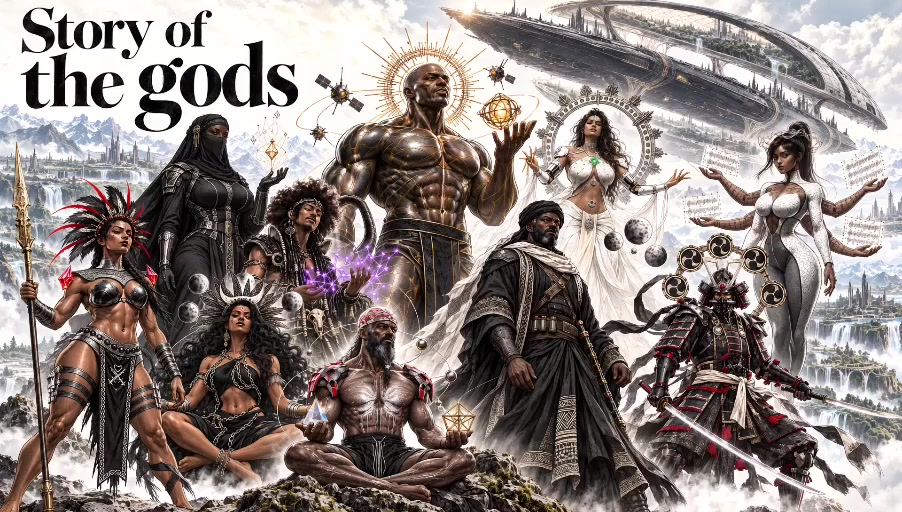
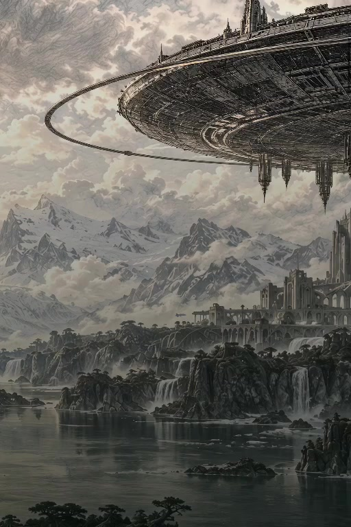
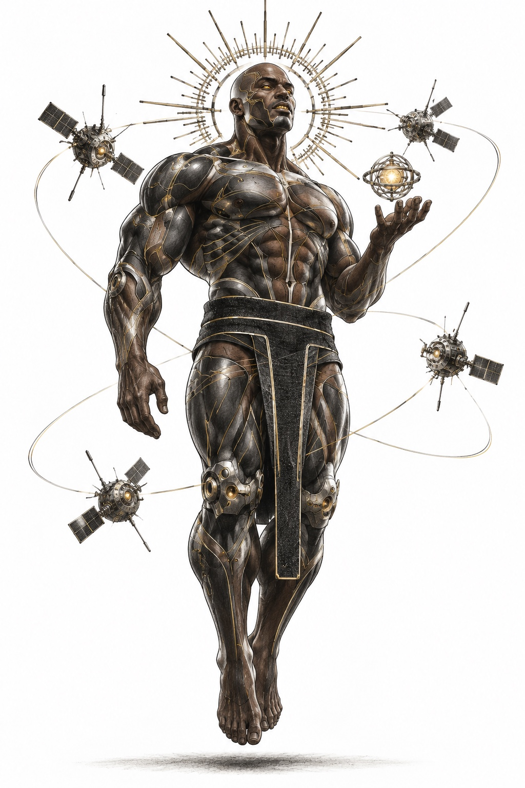
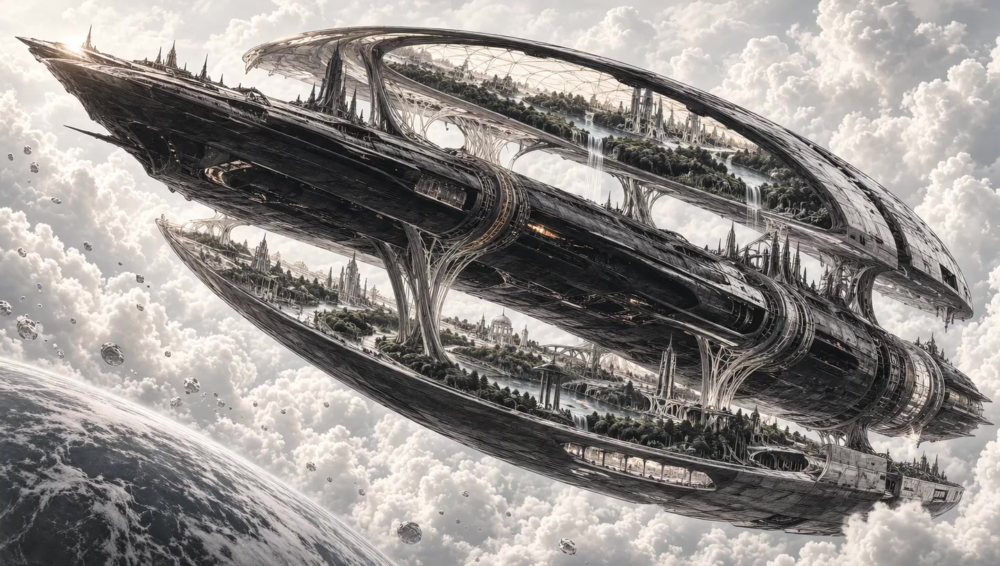
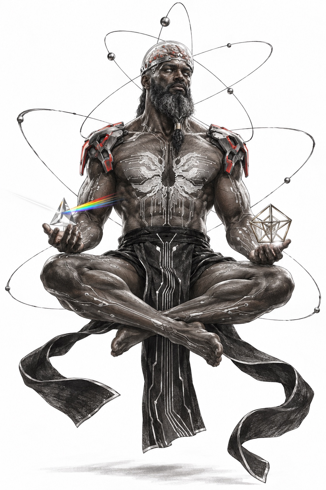

I / The fall
We conquered
everything.
Except ourselves.
A civilization beyond imagination. The same hunger for power. Progress could change their capabilities. It could not save them from greed, division, and war.

They crossed the universe.
Humanity was still the mystery.
Before our first cities, there was a civilization that reached the stars.
Forty thousand years ago, humanity mastered the union of biology and technology. It transformed its world, then lost it to the oldest weakness of all: itself.
Ten survived. Their minds carried beyond Earth in a living vessel, they searched the cosmos for something greater. Now they return to a species approaching the same breaking point.
To us, they would seem like gods.
To themselves, they are still human.

A world erased from memory
Where we see ice, they knew forests.
Where we see silence, they built a world.
I / The fall
A civilization beyond imagination. The same hunger for power. Progress could change their capabilities. It could not save them from greed, division, and war.
II / The transfer
Ten consciousnesses enter a living photon lattice aboard the Mothership, hidden in the Triangulum Galaxy. Beyond a dying world, they become the memory of a species—and the keepers of its extraordinary potential.
III / The return
They travel the universe in search of an equal. What awaits them at home is a younger humanity repeating the same mistakes. Help it. End it. Or step aside.
Continue scrolling to move through time ↓
Each carries a different answer
to the same impossible question:
what should humanity become?

Possibility has
no fixed form.
Sovereignty / The sun
Power is a burden before it is a gift.

Their technology extends the living world. The vessel that carries them is a sanctuary for consciousness, built around a living lattice.
When the body is no longer the limit, identity becomes the question. What remains human when almost everything can change?
Greater power cannot guarantee a better world. The deepest conflict is between what humanity can do and what it chooses to become.

Solomon / Character study[ 04 / A world with a signature ]
The Sacred Seven visual canon.
A mature illustrated universe with the weight of cinema. Graphite, charcoal, ink, and visible crosshatching. Human faces with history. Monumental compositions that still leave room for silence.
The scale is cosmic. The feeling is intimate. Every impossible image begins with a recognizable human truth.